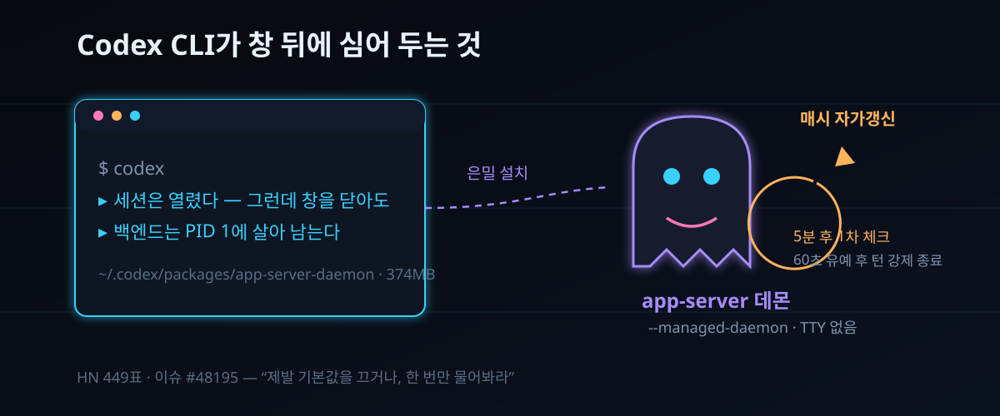

10/12 해커뉴스 449표 — Codex CLI가 몰래 심는 374MB 자가갱신 데몬, 잡는 법 3줄

세 줄 요약. ① Codex CLI 0.157.0부터는 터미널에서 codex를 띄우는 순간 백그라운드 데몬이 배후에 깔린다 — 창을 다 닫아도 PID 1에 업혀 재부팅 전까지 산다. ② 설치는 조용하다: 방금 npm으로 깐 374MB 패키지를 ~/.codex 아래 몰래 복제해 그 사본이 살고, 5분 뒤·이후 매 시각 스스로를 갱신한다. ③ 10월 12일 해커뉴스 449표로 번진 이슈 #48195의 요구는 거창하지 않다 — "제발 기본값을 끄거나, 딱 한 번만 물어봐라".
발단은 openai/codex의 기능 요청 이슈 #48195다. 9월 25일 등록된 이 글이 10월 12일 해커뉴스 앞면에 올라 449표를 쌓았다. 특정 버그 신고가 아니라 기본정책 항의다. 명령행 도구가 몰래 상주 프로세스와 자가 갱신 루프를 내 컴퓨터에 심는 행위 자체를, 최소 놀람 원칙으로 되돌려 달라는 청구다. 오늘은 경위를 시간순으로 짚고, 심혀 있을 데몬을 확인하고 뽑는 절차까지 내려간다.
30초 요약
| 항목 | 내용 |
|---|---|
| 무슨 일 | Codex CLI 0.157.0(2026-09-25 릴리스)가 daemon_auto_start를 실험 등급에서 안정으로 격상했다. 조건이 맞는 대화형 실행엔 백그라운드 서버가 기본으로 켜진다. 10월 12일 이슈 #48195가 HN 449표로 소환됐다 |
| 설치되는 것 | codex app-server --managed-daemon — TTY 없는 별도 세션에서 산다. 모든 Codex 창이 닫힌 뒤에도 PID 1에 업혀 살며, stop이나 재부팅 전까지 안 죽는다 |
| 용량 트릭 | 플랫폼 패키지 통째(약 374MB: codex, codex-code-mode-host, bwrap·zsh·rg 번들 포함)를 ~/.codex/packages/app-server-daemon/releases/에 바이트 단위로 복제하고 그 사본으로 돈다. 백엔드 버전이 내 패키지 매니저와 영영 남남이 되는 지점이다 |
| 자가갱신 | pid-update-loop가 기동 5분 뒤 1차로 점검하고 이후 매 시각 돈다. 새 릴리스를 받아 데몬을 재시작하는데, 이 재시작이 한창 돌던 턴을 죽인다(#40969: 60초 유예 후 강제 종료, 끄는 방법 없음) |
| 발생 사고 | Arch 리눅스 패키지에선 codex 자체가 안 뜨고(#48050), OpenBSD 포트는 같은 이유로 기본값을 되돌리는 패치를 넣었다. Windows 10 LTSC에선 승격 환경 충돌로 세션이 안 열린다는 보고가 있다. 자동갱신 도중 .git이 읽기 전용으로 깨져 목표 수행이 수 시간마다 끊긴다는 증언도 HN에 남았다 |
| 처치 | codex features disable daemon_auto_start → daemon stop → pkill -f 'app-server daemon pid-update-loop'(stop이 이 업데이터는 못 잡는다) → rm -rf ~/.codex/packages/app-server-daemon |
1. 무엇이 터졌나
이슈 본문이 그려 주는 0.157.0 이후의 'codex 한 번 띄우기'는 네 단계다. 첫째, 대화형 세션이 열리면서 codex app-server --managed-daemon이 백그라운드에 박힌다. 둘째, 방금 npm으로 설치한 것과 바이트까지 같은 374MB 패키지 사본이 ~/.codex/packages/app-server-daemon/releases/에 만들어지고, 데몬은 그 사본에서 돈다. 이 순간부터 백엔드 버전은 brew·pacman·npm이 관리하는 버전과 남남이 된다. 셋째, 분리된 업데이터가 깬다 — 5분 뒤 1차로 점검하고, 이후 한 시간마다 새 판을 기웃거리다 나오면 데몬을 재시작한다. 넷째, 데몬은 처음 띄운 세션의 환경을 얼려 쓴다. 프록시를 넣은 래퍼로 한 번 띄우면 이후 어떤 세션이든 그 프록시를 타고 나간다(#42457·#37537과 같은 뿌리).
언제부터 '기본'이 됐던가 하는 물음도 남는다. daemon_auto_start는 지난여름 옵트인 기능(#46117)으로 들어왔다. 9월 22일 PR #47179가 등급을 안정으로 올리고 기본값을 false에서 true로 뒤집었고, 9월 25일 rust-v0.157.0 릴리스 노트에 "적격 대화형 세션에 백그라운드 서버 자동 기동을 켠다"가 공식 문구로 자리 잡았다. 10월 12일 이 이슈가 HN 앞면에 재소환돼 449표를 모았다.
데몬 자체가 표적인 건 아니다. 이슈 제기자도 원격 제어·데스크톱 앱엔 상주 서버가 합당하다고 양보한다. 쟁점은 'CLI를 열었다'는 단 한 사건이 '미지의 상주 프로그램 + 자가 설치 경로 + 자가 갱신 스케줄' 셋을 동시에 태운다는 과잉이다. 창과 함께 뜨고 죽던 세상이, 어느새 "창을 닫았는데 백엔드는 왜 아직 살지?"를 변명해야 하는 세상이 됐다.
2. 왜 대단한가
① CLI와 앱의 경계에서 PC 주권이 시험대에 올랐다
HN 스레드를 지배한 문장은 이 정도다: 패키지 매니저는 이미 수천 개 프로그램을 백그라운드 자동갱신까지 시키며 굴러가게 만든다 — 그런데 애플리케이션이 각자의 방식으로도 자기 자신을 설치하기 시작하면? 상주 서버의 실익은 분명하다. 여러 창이 하나 백엔드를 공유하면 기동 지연이 줄고 세션 상태도 이어진다. 다만 그 실익이 '창 하나 연 사용자'에게까지 전가될 때 대가는 디스크 374MB, 살아 있는 프로세스, 버전 드리프트의 셋이다. Nix 커뮤니티가 Codex 패키지에서 두 동작(자동 설치·자가갱신)을 패치로 도려내 쓴다는 링크가 붙었고, 'Claude Code도 ~/.local/share/claude/versions에 과거 바이너리를 쌓은 채 백그라운드 작업을 돌린다'는 목격이 소환됐다. OpenAI만의 병이 아니라 하네스라는 장르의 체질이라는 진단이 이때 확정됐다.
② 끄는 과정에서 더 큰 결함이 드러났다
이슈의 백미는 '끄러우니 고쳐 달라'보다 '끄다 발견한 버그' 항목이다. codex app-server daemon stop은 이름값대로 app-server는 잡지만 pid-update-loop 업데이터는 놓고 간다 — 정지 70초 뒤에까지 살아 있어 수동 킬이 필요했다. 정지 명령이 자기 자식까지 회수하지 못하는 구조인 셈이다. 우회 3줄도 여기서 나왔다: features disable → daemon stop → pkill. 데몬이 죽은 뒤에도 업데이터가 홀로 살아 새 판을 받아 다시 판을 짜는 악몽을 막으려면 셋째 줄이 필수다.
③ 패커들이 먼저 항의했다
이론 다툼은 배포판들이 실증했다. Arch의 openai-codex는 0.157.0에서 codex를 그냥 띄우면 "이 CLI에는 완전한 로컬 패키지가 없다"는 오류로 즉시 죽는다 — 데몬 기동이 기본이 되면서 공식 배포판만 갖추는 codex-package.json 레이아웃을 요구하기 시작한 탓이다. --no-daemon은 임시 변통, 근본 처방은 features disable이다. OpenBSD 포트는 아예 소스에서 default_enabled를 false로 되돌려 배포했다. 주류 배포 경로(Nix, Arch, OpenBSD, Windows LTSC)가 한목소리로 '이 기능은 우리 환경에서 기본이면 안 된다'고 표결한 셈이다.
3. 바로 써먹기
먼저 진단이다.
# 데몬과 업데이터가 살아 있는지 목격
ps aux | grep -E 'app-server|pid-update-loop' | grep -v grep
# 설치 사본 존재 여부
du -sh ~/.codex/packages/app-server-daemon 2>/dev/null사본이 보이면 제기자가 실제로 쓰는 철거 순서를 그대로 쓴다. 순서가 중요하다 — disable보다 stop이 먼저면 갱신 루프가 먼저 손을 쓴다.
codex features disable daemon_auto_start
codex app-server daemon stop
pkill -f 'app-server daemon pid-update-loop'
rm -rf ~/.codex/packages/app-server-daemon설치 경로를 없애지 않고 실익(여러 창이 하나 백엔드 공유)만 챙기는 절충안도 있다. config.toml로 끄되 상주가 필요한 프로젝트에선 daemon start로 수동 기동하는 식이다. 판단표는 이렇다.
| 사용 상황 | 권장 세팅 |
|---|---|
| CI·컨테이너·샌드박스 (stray 프로세스가 곧 사고) | --no-daemon을 실행 래퍼에 상수화. resume/fork까지 플래그가 이어지므로(#46088) 래퍼 하나로 충분 |
| pacman·brew·npm 등 패키지 매니저 관리 | features disable이 정답. 사본 실행이 버전 드리프트의 원인이라, 끄고 나면 설치 판이 곧 실행 판 |
| 데스크톱 앱·원격 제어를 겸용 | 데몬 유지가 이롭다. 단 pid-update-loop의 60초 강제 킬(#40969) 때문에 긴 턴을 돌릴 때는 갱신 시각을 피할 것 |
| Nix 등 선언적 시스템 | upstream 패치 전까지는 기존처럼 두 동작(자동 설치·자가갱신)을 패치로 제거하는 편이 안정적 |
4. 해외 반응 쟁점
스레드는 세 갈래였다. 첫째, '하네스도 브라우저처럼 자가갱신해야 한다'는 진보파 — 일주일에 여섯 판 바뀌는 물건을 손 업데이트에 묶어 두는 게 비상식이라는 논리다. 둘째, '그래도 최소한 물어보긴 해야 한다'는 다수파 — 브라우저도 설치할 때 알리긴 했지 않느냐는 되물음이 붙는다. 셋째, '문제는 데몬이 아니라 신뢰'라는 회의파 — 자동갱신이 .git 권한을 뒤집어 목표 수행을 몇 시간마다 끊었다는 경험담이 이쪽에 무게를 싣는다: 미성숙한 물건이 소관 사항을 늘릴수록 사고 표면도 비례해 큰다. 이번 주 LocalLLaMA에서 반복된 원성이 스레드 끝자락의 정서를 대변한다 — 하네스가 내부 경쟁 모델을 노출하는 장면마다 제조사에 무료 광고가 된다는 자조다. 열기가 곧 제조 감시로 번질 준비가 돼 있었다는 인정이니.
5. 마시기 전 주의
첫째, 449표는 여론의 무게이지 결정의 무게가 아니다. 10월 12일 기준 daemon_auto_start는 여전히 안정·기본 활성이고, 레이블은 enhancement/CLI/app-server일 뿐 로드맵 약속은 없다. 둘째, 374MB·5분·60초 같은 숫자는 전부 이슈와 리포트의 1인 목격치다. 플랫폼(WSL2·Arch·Windows LTSC)에 따라 체감은 다르다. 셋째, pkill은 원자폭탄이다 — pid-update-loop 문자열을 단 다른 프로세스가 없는지 확인하고 쓸 것. 넷째, 스레드 속 개인 환경 증언은 재현을 요구하는 '증언'급임을 달아 읽으면 된다.
바로 가기
- 이슈 #48195 — daemon_auto_start를 옵트인으로 되돌려라 (openai/codex)
- Hacker News 스레드 — 449표
- 이슈 #48050 — Arch 패키지에서 codex가 기동 실패하는 이유